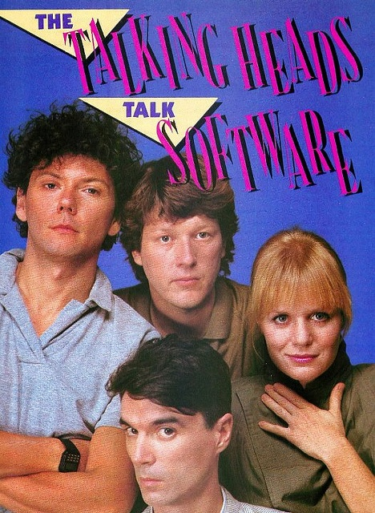
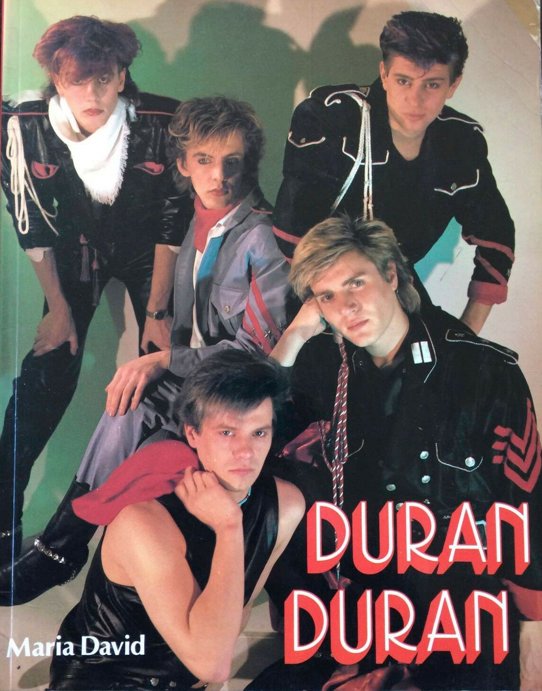
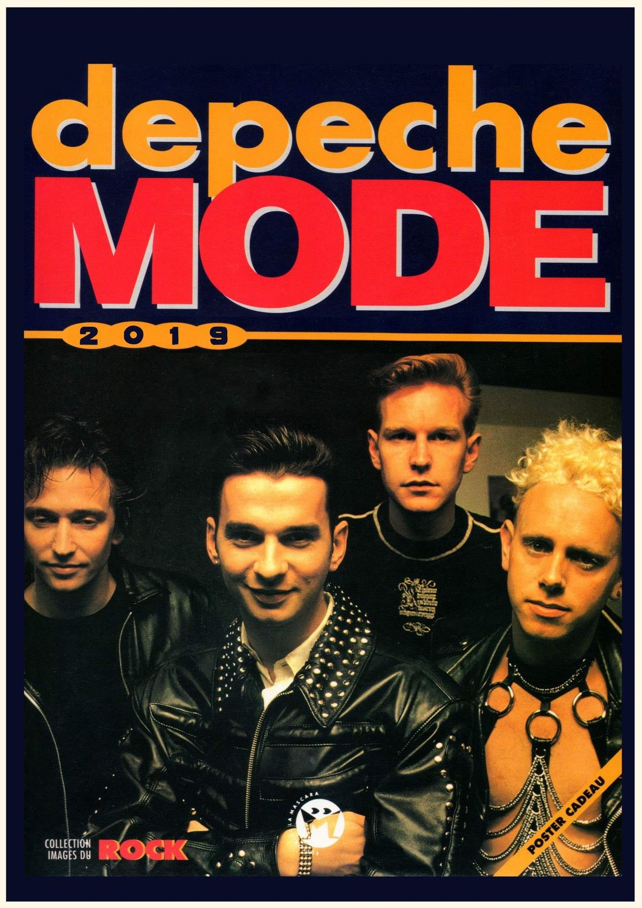

NEW WAVE
music_note Muito mais que um gênero musicalO New Wave é um movimento musical que surgiu no final da década de 1970 e ganhou enorme destaque durante os anos 1980. Influenciado pelo punk, pelo rock e pela música eletrônica, o gênero trouxe uma nova maneira de pensar a música, combinando instrumentos tradicionais com sintetizadores, baterias eletrônicas e novas tecnologias.
Mais do que apenas um estilo musical, o New Wave tornou-se parte de uma transformação cultural. Seus artistas exploravam novas formas de composição, visuais extravagantes e videoclipes criativos. A estética do movimento ajudou a definir a imagem de uma geração e contribuiu para aproximar a música da moda, da televisão e da cultura pop.
Neste site, você poderá conhecer a origem do New Wave, descobrir os artistas que ajudaram a construir sua história, conhecer músicas marcantes e entender por que esse gênero continua influenciando músicos e artistas até os dias atuais.
history A História do New Wave
Das cenas alternativas para o mundoO New Wave começou a ganhar forma no final dos anos 1970, em um período em que o cenário musical estava passando por grandes mudanças. O punk havia provocado uma ruptura com o rock tradicional, incentivando músicos a experimentar novas ideias e a criar músicas com menos preocupação com as regras estabelecidas pela indústria.
A partir desse ambiente surgiu uma geração de artistas que incorporou sintetizadores, sequenciadores, baterias eletrônicas e diferentes técnicas de produção. O resultado foi uma sonoridade que podia ser dançante, pop, experimental ou até mesmo sombria.
Durante os anos 1980, o New Wave alcançou o grande público. O crescimento da televisão musical e dos videoclipes foi extremamente importante para isso. As bandas passaram a investir não apenas em suas músicas, mas também em roupas, cenários, penteados e performances.
Dessa forma, o New Wave ultrapassou os limites da música e tornou-se um verdadeiro fenômeno cultural. Sua influência pode ser percebida até hoje em gêneros como synth-pop, indie rock, música eletrônica e pop alternativo.
graphic_eq Características do New Wave
O que torna esse gênero tão diferente?Uma das principais características do New Wave é a mistura de diferentes influências. O gênero não possui uma única sonoridade, mas costuma apresentar uma combinação entre rock, punk, pop e música eletrônica.
Os sintetizadores ganharam grande importância nesse período. Eles permitiram que os artistas criassem sons novos e atmosferas que não eram comuns no rock tradicional. As linhas de baixo também costumam possuir bastante destaque, enquanto guitarras e baterias ajudam a manter a ligação do gênero com o rock.
Outra característica marcante é a preocupação com a identidade visual. Muitos artistas utilizavam roupas coloridas, maquiagens, penteados diferentes e elementos considerados futuristas ou extravagantes.
- 🎹 Uso frequente de sintetizadores e teclados
- 🥁 Baterias eletrônicas e batidas dançantes
- 🎸 Influência do punk e do rock
- 🎤 Vocais e melodias marcantes
- 💿 Forte presença da música pop
- 🎨 Estética visual diferenciada
- 📺 Grande importância dos videoclipes
groups Grandes nomes
Artistas que ajudaram a construir o movimentoO New Wave reuniu artistas com estilos bastante diferentes. Alguns apostaram em músicas mais dançantes e acessíveis, enquanto outros exploraram sons experimentais, eletrônicos ou atmosféricos.
Talking Heads
Uma das bandas mais criativas associadas ao movimento. O grupo misturou rock, funk, música africana e elementos experimentais, criando uma sonoridade extremamente original.
Blondie
Liderada por Debbie Harry, a banda transitou entre punk, pop, disco, reggae e New Wave, conquistando grande sucesso e tornando-se um dos nomes mais importantes da época.
Duran Duran
Conhecido por sua combinação de pop, rock e sintetizadores, o grupo tornou-se um dos maiores representantes da estética e da sonoridade dos anos 1980.
Depeche Mode
O grupo ajudou a aproximar o New Wave da música eletrônica, utilizando sintetizadores e sequenciadores para desenvolver uma identidade sonora própria.
album Sons que marcaram uma geração
Músicas que ajudaram a definir o New Wave

|
 Talking HeadsAs músicas do Talking Heads demonstraram como o New Wave poderia ultrapassar os limites do rock tradicional, incorporando ritmos, instrumentos e influências de diferentes partes do mundo. |
BlondieA mistura de pop, punk, disco e New Wave ajudou Blondie a alcançar um público enorme e mostrou como diferentes gêneros poderiam coexistir dentro de uma mesma música. |
|
Duran DuranCom sintetizadores, linhas de baixo marcantes e videoclipes elaborados, Duran Duran tornou-se um dos símbolos da música popular dos anos 1980. |
 |
Depeche ModeA utilização de sintetizadores e equipamentos eletrônicos colocou o grupo entre os artistas responsáveis pela evolução da música eletrônica e do synth-pop. |
 |
palette A estética New Wave
Quando a música também virou identidade visualA identidade do New Wave não estava presente apenas nas músicas. O movimento também ficou conhecido por sua estética ousada e diferente. Cores vibrantes, roupas extravagantes, maquiagens marcantes e penteados criativos passaram a fazer parte da imagem de muitos artistas.
Os videoclipes tiveram um papel fundamental nessa transformação. Com a popularização da televisão musical, os artistas passaram a utilizar imagens como uma extensão de suas músicas. Cenários futuristas, efeitos visuais, figurinos chamativos e coreografias ajudaram a criar uma identidade que permanece associada aos anos 1980.
lightbulb Curiosidades
Você sabia?🎹 Os sintetizadores foram fundamentais
A popularização dos sintetizadores ajudou os artistas a criar novas texturas e possibilidades sonoras, tornando os instrumentos eletrônicos uma parte importante da música popular.
📺 Os videoclipes mudaram tudo
Durante os anos 1980, os videoclipes passaram a ter uma importância enorme. Muitos artistas utilizavam seus vídeos para criar personagens, histórias e identidades visuais tão marcantes quanto suas próprias músicas.
🎨 Música e moda caminharam juntas
A estética New Wave influenciou roupas, penteados e comportamentos. A aparência dos artistas tornou-se parte importante da experiência musical.
🌎 O movimento ultrapassou fronteiras
Embora tenha ganhado grande força nos Estados Unidos e no Reino Unido, o New Wave influenciou artistas de diversos países e deixou marcas importantes na música mundial.
🔊 Sua influência continua presente
Elementos característicos do New Wave continuam aparecendo em músicas modernas, principalmente no synth-pop, indie, pop alternativo e música eletrônica.
auto_awesome O legado do New Wave
Uma influência que continua vivaMesmo após o auge do movimento durante os anos 1980, o New Wave nunca desapareceu completamente. Seus sons, suas técnicas de produção e sua estética continuaram sendo utilizados e reinterpretados por artistas de diferentes gerações.
A liberdade para misturar gêneros e experimentar novas tecnologias ajudou a abrir espaço para vários estilos que surgiriam posteriormente. A influência do New Wave pode ser encontrada na música eletrônica, no synth-pop, no indie rock e em diversas vertentes do pop contemporâneo.
Seu maior legado talvez seja justamente a capacidade de transformar a música em uma experiência completa, unindo som, imagem, tecnologia e comportamento. Por isso, décadas depois de seu surgimento, o New Wave continua sendo lembrado, ouvido e redescoberto.
info Sobre Nós
Conheça o objetivo deste projetoEste site foi desenvolvido com o objetivo de apresentar o gênero musical New Wave, sua história, suas principais características e sua influência na cultura popular.
A proposta é reunir informações de maneira simples e visualmente agradável, permitindo que diferentes públicos possam conhecer melhor um movimento musical que marcou profundamente a década de 1980 e continua influenciando a produção musical contemporânea.
Através das diferentes seções, o visitante pode conhecer a origem do gênero, seus principais artistas, suas características sonoras, sua estética e algumas curiosidades que ajudam a compreender a importância do New Wave para a história da música.
Entre no universo New Wave
Descubra uma época em que sintetizadores, guitarras, criatividade e atitude se encontraram para transformar a música para sempre.
Uma geração. Um som. Uma revolução.
Explore a história, conheça os artistas e descubra por que o New Wave continua vivo até hoje.